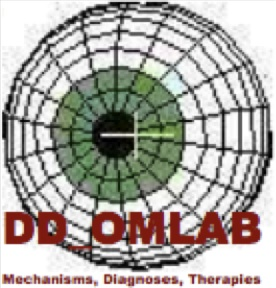

Home |
About OMLAB |
Personnel |
Software, Models, & Data |
Reports & Teaching
The "Editorial Page" |
Contact Us

[Chrome browser users: for better results, install the Google Translate extension
for other languages]
The Daroff-Dell'Osso Ocular Motility Laboratory
(OMLAB)
"American science has become vitiated by too much politeness...Conciliatory smoothness is the life blood of diplomacy: it is the death of science."
Protein and Energy: A Study of Changing Ideas in Nutrition, K.J. Carpenter (1983) Am J Physiol
From time to time op-ed postings will appear on this page.
They will be related to scientific research, intellectual property,
peer review of scientific papers and grant proposals, and journals.
We encourage your response.
All postings on this page are solely the opinions of the author
and do not necessarily represent those of other members of OMLAB.
Dell'Osso, L.F.: AGN Roadside Sobriety Test, DUI, and Childhood Nystagmus:
A Charge with no Foundation, Test with Flawed Scientific Bases, and Trial that Never Should have Occurred.
Last Modified: 7/10/21
Editorial #071021, 1-4, 2021.
Transcript of the expert-witness testimony of L.F. Dell'Osso, Ph.D. in a case where a person
with childhood nystagmus was charged with DUI based solely on the AGN Roadside Sobriety Test.
Last Modified: 6/25/21
Transcript (PDF)
Errata (HTML)
Dell'Osso, L.F.: Appropriate Outcome Measures for Infantile Nystagmus Therapies:
"Science-based" not "Evidence-based" Studies.
OMLAB Editorial #010410, 1-6, 2010.
Last Modified: 9/24/10
Click here to read.
Dell'Osso, L.F.: INOS 2008 - Ethical Science or Something Else?
OMLAB Editorial #071107, 1-8, 2007.
(Epilogue Added: 8/6/08)
INOS Members Need to Know
Click here to read.
Home |
About OMLAB |
Personnel |
Software, Models, & Data |
Reports & Teaching
The "Editorial Page" |
Contact Us